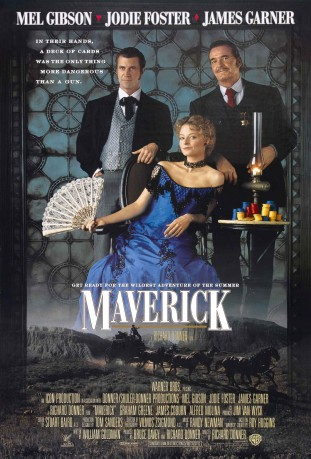

#5892 Maverick - Den Colt am Gürtel, ein As im Ärmel
Alternativ: Maverick
Auszeichnungen: für 1 Oscars nominiert
 
 IMDB-Wertung: 7.0 / 10
IMDB-Wertung: 7.0 / 10  Metascore: 0
Metascore: 0 
Maverick is recreated from the character James Garner created in the 1950s TV program. Maverick is a gambler who would rather con someone than fight them. He needs an additional three thousand dollars in order to enter a Winner Take All poker game that begins in a few days. He tries to win some, tries to collect a few debts, and recover a little loot for the reward, all with a light hearted air. He joins forces with a woman gambler with a marvelous, though fake, southern accent as the two both try and enter the game.
Jahr: 1994
Dauer: 126 Minuten
FSK: 12
Land: USA Studio: Warner Bros.Tonspuren:
Untertitel: Englisch,
Auflösung: 1080p (1920x800) Größe: 9123 MB
Genre: Action, Thriller, Komödie, Abenteuer, Western
Regisseur:  Richard Donner
Richard Donner
Drehbuch: Dennis Marks
Soundtrack:
Darsteller:
 Mel Gibson als Bret Maverick
Mel Gibson als Bret Maverick Jodie Foster als Annabelle Bransford
Jodie Foster als Annabelle Bransford James Garner als Marshal Zane Cooper
James Garner als Marshal Zane Cooper Graham Greene als Joseph
Graham Greene als Joseph Alfred Molina als Angel
Alfred Molina als Angel James Coburn als Commodore Duvall
James Coburn als Commodore Duvall Dub Taylor als Room Clerk
Dub Taylor als Room Clerk Geoffrey Lewis als Matthew Wicker / Eugene, Banker
Geoffrey Lewis als Matthew Wicker / Eugene, Banker- Paul L. Smith als The Archduke
 Dan Hedaya als Twitchy, Riverboat Poker Player
Dan Hedaya als Twitchy, Riverboat Poker Player- Dennis Fimple als Stuttering
 Denver Pyle als Old Gambler on Riverboat
Denver Pyle als Old Gambler on Riverboat- Clint Black als Sweet-Faced Gambler
 Max Perlich als Johnny Hardin
Max Perlich als Johnny Hardin Art LaFleur als Poker Player
Art LaFleur als Poker Player Leo Gordon als Poker Player
Leo Gordon als Poker Player- Paul Brinegar als Stage Driver
 Corey Feldman als Bank Robber
Corey Feldman als Bank Robber- Jesse Eric Carroll als Stable Boy
 John Meier als Unshaven Man
John Meier als Unshaven Man- Lauren Shuler Donner als Mrs. D., Bathhouse Maid
 Stephen Liska als Dealer
Stephen Liska als Dealer- Vilmos Zsigmond als Albert Bierstadt
- Vince Gill als Spectator
 William Smith als Riverboat Poker Player
William Smith als Riverboat Poker Player- Doug McClure als Riverboat Poker Player
- Henry Darrow als Riverboat Poker Player
 Michael Paul Chan als Riverboat Poker Player
Michael Paul Chan als Riverboat Poker Player Bert Remsen als Riverboat Poker Player
Bert Remsen als Riverboat Poker Player- Robert Fuller als Riverboat Poker Player
 Donal Gibson als Riverboat Poker Player
Donal Gibson als Riverboat Poker Player- William Marshall als Riverboat Poker Player
- Cal Bartlett als Riverboat Poker Player
 Linda Hunt als The Magician , scenes deleted
Linda Hunt als The Magician , scenes deleted- Chris M. Allport als Boy#1 , uncredited
 Monica Lee Bellais als Riverboat Spectator , uncredited
Monica Lee Bellais als Riverboat Spectator , uncredited Richard Donner als Dealer , uncredited
Richard Donner als Dealer , uncredited- James Drury als Riverboat Poker Player , uncredited
- John Fogerty als Street Spectator , uncredited
- Patrick Fullerton als Spectator , uncredited
 Danny Glover als Bank Robber , uncredited
Danny Glover als Bank Robber , uncredited Bob Jennings als Bartender , uncredited
Bob Jennings als Bartender , uncredited- Margot Kidder als Margret Mary , uncredited
- Reba McEntire als Spectator , uncredited
 John Otrin als Riverboat Spectator , uncredited
John Otrin als Riverboat Spectator , uncredited Don Stark als Riverboat Poker Player , uncredited
Don Stark als Riverboat Poker Player , uncredited- Paul Tuerpe als Poker Player
- Jean De Baer als Mary Margret
- Hal Ketchum als Bank Robber
- John M. Woodward als Bank Robber
Datei: X:\HD-Western-1980-1999\Maverick - Den Colt am Gürtel, ein As im Ärmel (1994, FSK12, 1920x800).mkv seit 03.04.2017
Festplatte: HD Eastern+Western
 Es gibt insgesamt 29 Filme in der Gruppe 'HD-Western-1980-1999'
Es gibt insgesamt 29 Filme in der Gruppe 'HD-Western-1980-1999'